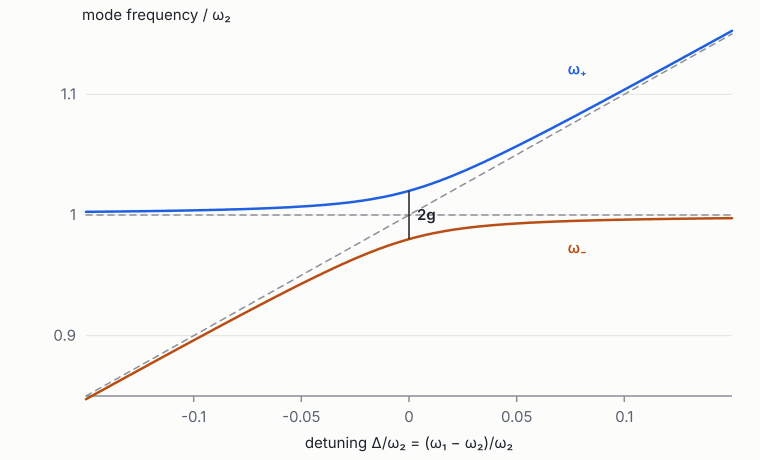
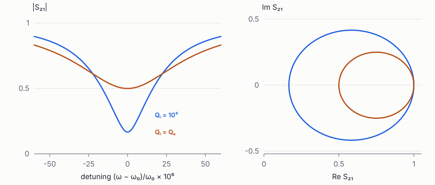
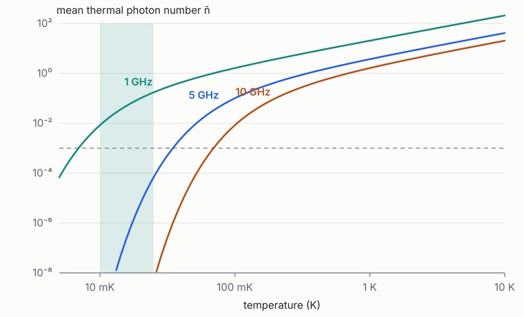

Foundations of Quantum Engineering · Book 2 of 7
Classical Physics for Quantum Engineers
Lagrangian and Hamiltonian mechanics, oscillators, electromagnetism, microwave circuits, waveguides and thermal noise
How to use this book
A quantum processor is a classical object for almost all of its design. Its metal patterns are drawn by lithography, its fields obey Maxwell's equations, its signals travel down transmission lines, its heat flows to a refrigerator, and its noise comes from resistors and amplifiers. Only at the very end does one "quantise" the result. That last step is mechanical once the classical description is right: write the energy as a Lagrangian, convert it to a Hamiltonian, and replace Poisson brackets by commutators. This book builds the classical description and leaves the system ready to be quantised in Books 3, 5 and 6.
Chapters 1–3 develop mechanics in the form quantum theory needs: least action, Lagrangians, Hamiltonians and oscillators. Chapters 4–6 develop electromagnetism from charges to microwave circuits, ending with the transmission-line resonators that are the workhorses of superconducting quantum hardware. Chapter 7 does the same for light in optical waveguides, which is the starting point of Book 5 on photonics. Chapter 8 covers thermal physics and noise, which decide why quantum hardware has to be cold and how much noise reaches a qubit.
Prerequisites are the first six chapters of Book 1. The chapters use SI units throughout; useful constants are \(e = 1.602\times10^{-19}\) C, \(h = 6.626\times10^{-34}\) J s, \(\hbar = h/2\pi\), \(k_B = 1.381\times10^{-23}\) J/K, \(\varepsilon_0 = 8.854\times10^{-12}\) F/m and \(\mu_0 = 4\pi\times10^{-7}\) H/m (to the precision used here).
1 From Newton to Lagrange: the principle of least action
Goals
- Restate Newton's laws as a variational principle and derive the Euler–Lagrange equations.
- Choose generalised coordinates, including ones that are not positions, and write Lagrangians for mechanical and electrical systems.
- Write the Lagrangian of an LC circuit in terms of node flux, the first step of circuit quantisation.
- Connect symmetries to conservation laws.
1.1 Why reformulate Newton
Newton's second law, \(m\ddot{\mathbf r} = \mathbf F\), works perfectly for particles in Cartesian coordinates. It becomes awkward when the natural variables are angles, when there are constraints (a bead on a wire), or when the "particle" is not a particle at all but a voltage on a capacitor. Quantum mechanics also needs more than forces: it needs the energy function of a system and a pair of variables (a coordinate and its conjugate momentum) to turn into operators. The Lagrangian and Hamiltonian formulations supply both. For quantum engineering the payoff is concrete: the Hamiltonian of a superconducting circuit is derived by writing its Lagrangian, and every term in the result is a capacitance or inductance computed from the layout (Lab to Foundry §3.1).
1.2 The action and the Euler–Lagrange equation
For a system described by a coordinate \(q(t)\), define the Lagrangian as kinetic minus potential energy, \(L(q,\dot q) = T - V\), and the action of a path between times \(t_1\) and \(t_2\) as
The principle of stationary action states that the path the system actually follows makes \(S\) stationary: changing the path slightly, \(q\to q+\delta q\) with \(\delta q(t_1)=\delta q(t_2)=0\), changes \(S\) only at second order. Compute the first-order change:
\[ \delta S = \int_{t_1}^{t_2}\Big(\frac{\partial L}{\partial q}\delta q + \frac{\partial L}{\partial\dot q}\delta\dot q\Big)\dd t = \int_{t_1}^{t_2}\Big(\frac{\partial L}{\partial q} - \frac{\dd}{\dd t}\frac{\partial L}{\partial\dot q}\Big)\delta q\,\dd t , \]where the second form integrates by parts (the boundary term vanishes because \(\delta q\) is zero at the ends). For this to vanish for every \(\delta q\), the bracket must be zero at every time:
This is the Euler–Lagrange equation. Check it on a particle: \(L = \tfrac12m\dot x^2 - V(x)\) gives \(\partial L/\partial\dot x = m\dot x\) and \(\partial L/\partial x = -V'(x)\), so \(m\ddot x = -V'(x) = F\). Newton's law is recovered. For several coordinates \(q_1,\dots,q_n\) there is one equation per coordinate.
Why "least" action? The classical path is a stationary point of \(S\), not always a minimum. The deeper reason it is singled out comes from quantum mechanics: Feynman showed that a quantum particle explores every path with amplitude \(\ee^{\ii S/\hbar}\). Paths near a stationary point have nearly equal phases and add constructively, while other paths cancel. When \(S\gg\hbar\), only the neighbourhood of the classical path survives. Classical mechanics is the constructive-interference limit of quantum mechanics.
1.3 Generalised coordinates
The power of (2) is that \(q\) can be any set of variables that specifies the configuration. For a pendulum of length \(\ell\), the angle \(\theta\) is enough: \(T = \tfrac12m\ell^2\dot\theta^2\), \(V = -mg\ell\cos\theta\), and the Euler–Lagrange equation gives \(m\ell^2\ddot\theta = -mg\ell\sin\theta\) without ever computing the tension in the string. For small angles \(\sin\theta\approx\theta\) and the pendulum is a harmonic oscillator of frequency \(\sqrt{g/\ell}\); for large angles it is a nonlinear oscillator whose frequency drops with amplitude. Keep this example in mind: the potential energy of a Josephson junction is also \(-E_J\cos\varphi\), so a transmon is, mathematically, a quantum pendulum (Book 6).
1.4 The Lagrangian of a circuit
For electrical circuits, a convenient generalised coordinate is the node flux, the time integral of the node's voltage relative to ground:
A capacitor stores energy \(\tfrac12CV^2 = \tfrac12C\dot\Phi^2\), which depends on the "velocity" \(\dot\Phi\), so it plays the role of kinetic energy. An inductor carries current \(I = \Phi/L\) (because \(V = L\dot I\) integrates to \(\Phi = LI\)), and stores energy \(\tfrac12LI^2 = \Phi^2/2L\), which depends on the "position" \(\Phi\): a potential energy. The Lagrangian of an LC circuit is therefore
The Euler–Lagrange equation gives \(C\ddot\Phi = -\Phi/L\), i.e. \(\ddot\Phi + \Phi/LC = 0\): a harmonic oscillator at \(\omega_0 = 1/\sqrt{LC}\). The analogy is exact: capacitance is mass, inverse inductance is spring constant, flux is position, and, as the next chapter shows, charge is momentum.
For a network with many nodes, each node \(i\) gets a flux \(\Phi_i\). Each capacitor between nodes \(i\) and \(j\) contributes \(\tfrac12C_{ij}(\dot\Phi_i-\dot\Phi_j)^2\), and collecting all of them gives \(T = \tfrac12\dot{\boldsymbol\Phi}^{\mathsf T}\mathbf C\dot{\boldsymbol\Phi}\), where \(\mathbf C\) is the capacitance matrix of Chapter 4. Inductors give \(V = \tfrac12\boldsymbol\Phi^{\mathsf T}\mathbf L^{-1}\boldsymbol\Phi\). A Josephson junction, as we will show in Book 6, adds \(-E_J\cos(2\pi\Phi_{\text{branch}}/\Phi_0)\). This is precisely the Lagrangian at the start of the review's design section (Lab to Foundry eq. (1)). You now know where it comes from.
Worked example: two capacitively coupled LC oscillators. Two LC circuits \((C_1, L_1)\) and \((C_2, L_2)\) share a coupling capacitor \(C_g\) between their top nodes. With node fluxes \(\Phi_1,\Phi_2\):
\[ \mathcal L = \tfrac12C_1\dot\Phi_1^2 + \tfrac12C_2\dot\Phi_2^2 + \tfrac12C_g(\dot\Phi_1-\dot\Phi_2)^2 - \frac{\Phi_1^2}{2L_1} - \frac{\Phi_2^2}{2L_2} = \tfrac12\dot{\boldsymbol\Phi}^{\mathsf T}\begin{pmatrix}C_1+C_g & -C_g\\ -C_g & C_2+C_g\end{pmatrix}\dot{\boldsymbol\Phi} - \ldots \]The off-diagonal element \(-C_g\) of the capacitance matrix couples the two oscillators. Every coupling between qubits and resonators on a superconducting chip enters this way, and its strength is fixed by a number that an electrostatic solver computes from the geometry.
1.5 Symmetry and conservation
If \(L\) does not depend on some coordinate \(q_k\) (the coordinate is cyclic), the Euler–Lagrange equation says \(\frac{\dd}{\dd t}(\partial L/\partial\dot q_k) = 0\): the conjugate momentum \(p_k = \partial L/\partial\dot q_k\) is conserved. More generally, Noether's theorem states that every continuous symmetry gives a conserved quantity: translation invariance gives momentum, rotation invariance gives angular momentum, and invariance under shifts in time gives energy. In circuits, a node that is connected to the rest only through capacitors (an "island") has a Lagrangian independent of its flux, so its conjugate momentum, which is its charge, is conserved. That is why the charge on a superconducting island is quantised in units of Cooper pairs, the starting point of the Cooper-pair box and the transmon.
A circuit-quantisation tool takes a netlist (nodes, capacitors, inductors, junctions), builds \(\mathbf C\) and \(\mathbf L^{-1}\), writes the Lagrangian, and hands it to the next chapter's Legendre transform. The capacitances come from an electrostatic simulation of the layout. If those numbers are 1% off, the qubit frequency is about 0.5% off (Lab to Foundry eq. (8)), which is tens of MHz.
Exercises
- A mass \(m\) slides on a frictionless ring of radius \(R\) rotating about a vertical diameter at angular velocity \(\Omega\). Using the polar angle \(\theta\) from the bottom, show that \(L = \tfrac12mR^2(\dot\theta^2 + \Omega^2\sin^2\theta) + mgR\cos\theta\) and find the equation of motion.
Solution
Velocity components: \(R\dot\theta\) along the ring and \(R\Omega\sin\theta\) around the axis, so \(T = \tfrac12mR^2(\dot\theta^2+\Omega^2\sin^2\theta)\); height \(-R\cos\theta\) gives \(V = -mgR\cos\theta\). Euler–Lagrange: \(mR^2\ddot\theta = mR^2\Omega^2\sin\theta\cos\theta - mgR\sin\theta\). For \(\Omega^2 > g/R\) the bottom becomes unstable and the bead settles at \(\cos\theta = g/R\Omega^2\).
- Find the resonance frequency of an LC circuit with \(L = 10\) nH and \(C = 80\) fF. What would \(C\) need to be to halve the frequency?
Solution
\(\omega_0 = 1/\sqrt{LC} = 1/\sqrt{8\times10^{-22}}\approx3.54\times10^{10}\) rad/s, so \(f_0\approx 5.6\) GHz. Halving \(f\) needs four times the capacitance, 320 fF.
- For the coupled oscillators of the worked example with \(C_1 = C_2 = C\) and \(L_1=L_2=L\), find the two normal-mode frequencies.
Solution
Equations of motion: \(\mathbf C\ddot{\boldsymbol\Phi} = -\boldsymbol\Phi/L\). Try \((1,1)\): the coupling term vanishes, so \(C\ddot\Phi = -\Phi/L\), \(\omega_+ = 1/\sqrt{LC}\). Try \((1,-1)\): the effective capacitance is \(C+2C_g\), \(\omega_- = 1/\sqrt{L(C+2C_g)}\). The splitting is \(\approx\omega_0C_g/C\) for small \(C_g\).
- Show that if \(L\) has no explicit time dependence, the quantity \(E = \sum_k\dot q_k\,\partial L/\partial\dot q_k - L\) is conserved, and that it equals \(T+V\) when \(T\) is quadratic in velocities.
Solution
\(\frac{\dd E}{\dd t} = \sum_k\big[\ddot q_kp_k + \dot q_k\dot p_k\big] - \sum_k\big[\frac{\partial L}{\partial q_k}\dot q_k + p_k\ddot q_k\big]\), with \(p_k = \partial L/\partial\dot q_k\). Using \(\dot p_k = \partial L/\partial q_k\) everything cancels. For \(T = \tfrac12\sum M_{jk}\dot q_j\dot q_k\), \(\sum\dot q_kp_k = 2T\), so \(E = 2T - (T - V) = T+V\).
2 Hamiltonian mechanics and phase space
Goals
- Pass from a Lagrangian to a Hamiltonian with the Legendre transform, including the multi-variable case with a capacitance matrix.
- Use Hamilton's equations and phase-space portraits.
- Compute Poisson brackets, and see how they become commutators in quantum mechanics.
- Write the Hamiltonian of an LC circuit and of a network in terms of charge and flux.
2.1 The Legendre transform
The Lagrangian uses positions and velocities. Hamilton's formulation uses positions and conjugate momenta,
and replaces \(L\) by the Hamiltonian
This change of variables is the Legendre transform. For \(L = \tfrac12m\dot x^2 - V(x)\), \(p = m\dot x\), so \(\dot x = p/m\) and \(H = p^2/m - (p^2/2m - V) = p^2/2m + V(x)\): the total energy written in terms of momentum. For several variables with a velocity-dependent energy \(T = \tfrac12\dot{\mathbf q}^{\mathsf T}M\dot{\mathbf q}\), the momenta are \(\mathbf p = M\dot{\mathbf q}\) and
Note the inverse mass matrix. In a circuit, \(M\) is the capacitance matrix \(\mathbf C\), the momentum conjugate to node flux is \(Q_i = \partial\mathcal L/\partial\dot\Phi_i = \sum_j C_{ij}\dot\Phi_j\), which is the node charge, and the Hamiltonian is \(H = \tfrac12\mathbf Q^{\mathsf T}\mathbf C^{-1}\mathbf Q + U(\boldsymbol\Phi)\). Every charging energy \(E_C = e^2/2C\) in quantum hardware is an element of \(\mathbf C^{-1}\), not of \(\mathbf C\). A small error in a large capacitance matrix can produce a large error in its inverse when the matrix is ill-conditioned, which is one reason extraction accuracy matters.
2.2 Hamilton's equations and phase space
Varying the action written as \(\int(p\dot q - H)\dd t\) independently in \(q\) and \(p\) gives Hamilton's equations:
Two first-order equations replace one second-order equation. The state of the system is a point \((q,p)\) in phase space, and the equations define a flow. For the harmonic oscillator \(H = p^2/2m + \tfrac12m\omega^2q^2\), the trajectories are ellipses of constant energy; rescaling \(q\) and \(p\) turns them into circles traversed at angular frequency \(\omega\). That circular motion in phase space, written as one complex number \(\alpha = (m\omega q + \ii p)/\sqrt{2m\hbar\omega}\) rotating as \(\ee^{-\ii\omega t}\), becomes the annihilation operator of the quantum oscillator in Book 3, and the phasor of Book 1.
Two properties of the flow carry over to quantum mechanics. Energy is conserved when \(H\) does not depend explicitly on time (\(\dot H = \partial_qH\dot q + \partial_pH\dot p = 0\)). And phase-space volume is conserved (Liouville's theorem): a blob of initial conditions can be stretched and folded but never compressed. Its quantum counterpart is the unitarity of time evolution: information is never destroyed in a closed system. Dissipation needs an environment.
2.3 Poisson brackets
For two functions on phase space, define the Poisson bracket
Then the time evolution of any quantity is \(\dot f = \{f, H\}\) (plus \(\partial f/\partial t\) if \(f\) depends explicitly on time), and the coordinates satisfy the canonical relations \(\{q_j, p_k\} = \delta_{jk}\), \(\{q_j,q_k\} = \{p_j,p_k\} = 0\). Dirac noticed that the rules of quantum mechanics follow from replacing
This is canonical quantisation. Applied to a circuit, flux and charge become operators with \([\hat\Phi,\hat Q] = \ii\hbar\). Their fluctuations cannot both vanish, and a circuit at absolute zero still has zero-point fluctuations of voltage and current. That is the physical basis of superconducting qubits, and the reason the Lagrangian-to-Hamiltonian procedure of these two chapters is the first step of every circuit-design flow.
Which variable is the "position"? For circuits, either flux or charge can play the role of position, as long as the other is its conjugate momentum. With node flux as the coordinate, capacitors are kinetic and inductors potential. With loop charge as the coordinate, the roles swap. The node-flux choice is standard for superconducting circuits because Josephson junctions are naturally functions of flux, but some devices (charge qubits, quantum dots) are more natural in the charge picture.
2.4 The LC oscillator in charge and flux
From (4), \(Q = C\dot\Phi\) and
It is useful to introduce the characteristic impedance \(Z = \sqrt{L/C}\). The oscillator's flux and charge amplitudes at a given energy \(E\) are \(\Phi_{\max} = \sqrt{2LE}\) and \(Q_{\max} = \sqrt{2CE}\), so their ratio is \(\Phi_{\max}/Q_{\max} = Z\). In the quantum ground state the energy is \(\hbar\omega/2\), and the zero-point fluctuations are
(These come from Book 3; the classical analysis already tells you they scale with \(\sqrt Z\) and \(1/\sqrt Z\).) A circuit with impedance near \(R_Q = h/(2e)^2\approx 6.45\) kΩ has phase fluctuations of order one and is "very quantum"; a 50 Ω circuit has tiny phase fluctuations. Comparing impedances to the resistance quantum is a quick way to judge how nonlinear a junction circuit will be.
2.5 Driven systems and the interaction picture, classically
Adding a drive means adding a time-dependent term, for example a voltage source coupled through a capacitor \(C_d\) contributes \(H_d(t) = (C_d/C_\Sigma)\,V_d(t)\,Q\) to leading order. It is often convenient to separate a Hamiltonian into a simple part \(H_0\), whose motion we know exactly, and a perturbation \(H_1\), and to describe the slow drift of the constants of the \(H_0\) motion caused by \(H_1\). For an oscillator, the constants are the amplitude and phase, combined into a complex amplitude \(\alpha\); a resonant drive makes \(\alpha\) grow linearly in time, an off-resonant drive makes it circle. This classical "rotating-frame" picture becomes exact in quantum mechanics as the interaction picture of Book 3.
The Hamiltonian \(H = \tfrac12\mathbf Q^{\mathsf T}\mathbf C^{-1}\mathbf Q + U(\boldsymbol\Phi)\) is what circuit-quantisation tools such as scqubits, QuCAT and SQcircuit start from (Lab to Foundry §3.3). The design parameters of a qubit (frequency, anharmonicity, couplings) are all functions of \(\mathbf C^{-1}\), \(\mathbf L^{-1}\) and the junction energies. The Jacobian of those functions with respect to the layout is what statistical sign-off needs.
Exercises
- Derive Hamilton's equations for \(H = Q^2/2C + \Phi^2/2L\) and show they reproduce Kirchhoff's laws for the LC loop.
Solution
\(\dot\Phi = \partial H/\partial Q = Q/C = V\) (capacitor law, since \(\dot\Phi\) is the voltage) and \(\dot Q = -\partial H/\partial\Phi = -\Phi/L = -I\) (the capacitor discharges through the inductor). Together they give \(\ddot\Phi = -\Phi/LC\).
- Show that \(\{q,p\}=1\) and that \(\{q, H\} = p/m\) for \(H = p^2/2m + V\).
Solution
\(\{q,p\} = \frac{\partial q}{\partial q}\frac{\partial p}{\partial p} - 0 = 1\). \(\{q,H\} = \frac{\partial H}{\partial p} = p/m = \dot q\), consistent with \(\dot f = \{f,H\}\).
- For the capacitance matrix \(\mathbf C = \begin{pmatrix}C+C_g & -C_g\\-C_g & C+C_g\end{pmatrix}\), compute \(\mathbf C^{-1}\) and identify the charge–charge coupling term in the Hamiltonian.
Solution
\(\det\mathbf C = (C+C_g)^2 - C_g^2 = C(C+2C_g)\). \(\mathbf C^{-1} = \frac{1}{C(C+2C_g)}\begin{pmatrix}C+C_g & C_g\\ C_g & C+C_g\end{pmatrix}\). The Hamiltonian contains \(\frac{C_g}{C(C+2C_g)}Q_1Q_2\approx\frac{C_g}{C^2}Q_1Q_2\): a coupling proportional to the product of charges. In quantum form this becomes the exchange coupling \(g(a_1^\dagger a_2 + a_1a_2^\dagger)\) of Book 6.
- Compute \(Z\), \(\Phi_{\mathrm{zpf}}\) and the ratio \(2\pi\Phi_{\mathrm{zpf}}/\Phi_0\) (with \(\Phi_0 = h/2e\)) for \(L = 10\) nH, \(C = 80\) fF.
Solution
\(Z = \sqrt{10^{-8}/8\times10^{-14}}\approx354\) Ω. \(\Phi_{\mathrm{zpf}} = \sqrt{\hbar Z/2} = \sqrt{1.055\times10^{-34}\times177}\approx1.37\times10^{-16}\) Wb. \(\Phi_0 = 2.07\times10^{-15}\) Wb, so \(2\pi\Phi_{\mathrm{zpf}}/\Phi_0\approx0.41\). The phase fluctuates by about 0.4 radians, large enough that a junction's cosine nonlinearity matters, which is the transmon regime.
3 Oscillators: damping, driving, coupling and nonlinearity
Goals
- Describe a lossy resonator with internal and external quality factors and the input–output picture.
- Treat coupled oscillators: normal modes, avoided crossings, and the dispersive limit.
- Understand the nonlinear (Duffing) oscillator, whose frequency depends on amplitude, as the classical shadow of a transmon.
- Meet parametric driving, the principle behind quantum-limited amplifiers.
3.1 Loss: internal and external
Book 1 described a damped oscillator with one decay rate \(\gamma\). A real resonator loses energy through several independent channels, and the rates add: \(\gamma = \sum_i\gamma_i\), or equivalently
where the internal quality factor \(Q_i\) collects unwanted loss (dielectrics, metal surfaces, radiation) and the external or coupling quality factor \(Q_e\) describes deliberate coupling to a measurement line. The loaded \(Q_L\) is what sets the observed linewidth. A designer chooses \(Q_e\) by geometry (a coupling capacitor or a length of line running parallel to a feedline). Fabrication and materials set \(Q_i\). Measuring both separately from a single resonance trace is the standard way to characterise materials loss (Chapter 6 and Lab to Foundry §5.1).
In terms of the complex amplitude \(a(t)\) of the resonator (normalised so \(|a|^2\) is the stored energy in units of \(\hbar\omega_0\), i.e. the photon number), coupled to an input line carrying amplitude \(a_{\mathrm{in}}\), the input–output equations read
with \(\kappa_{i,e} = \omega_0/Q_{i,e}\). At steady state with a drive at \(\omega\), \(a = \sqrt{\kappa_e}a_{\mathrm{in}}/[\ii(\omega_0-\omega) + \kappa/2]\), so the reflection coefficient is
On resonance \(r = (\kappa_i - \kappa_e)/(\kappa_i+\kappa_e)\). If \(\kappa_e = \kappa_i\) (critical coupling) nothing is reflected: all the incoming power is absorbed. If \(\kappa_e\gg\kappa_i\) (overcoupled) almost everything comes back, but with its phase flipped by \(\pi\), which is how a readout resonator encodes information in phase. Plotted in the complex plane as \(\omega\) sweeps, \(r(\omega)\) traces a circle whose diameter is \(2\kappa_e/\kappa\); fitting that circle separates \(\kappa_i\) from \(\kappa_e\). The same equations, with operators in place of numbers, are the quantum input–output theory of Book 5.
3.2 Coupled oscillators and avoided crossings
Two oscillators with amplitudes \(a_1, a_2\), frequencies \(\omega_1, \omega_2\) and a weak coupling \(g\) obey, in the same complex-amplitude language,
This is the "coupled-mode" form: it keeps only the slowly varying parts of the motion and is accurate when \(g\ll\omega_{1,2}\). It has exactly the structure of the Schrödinger equation for a two-level system. The normal-mode frequencies were found in Book 1: \(\omega_\pm = \bar\omega\pm\tfrac12\sqrt{\Delta^2+4g^2}\). Figure 1 plots them as one oscillator is tuned through the other. The uncoupled frequencies cross; the coupled ones repel, with a minimum gap of \(2g\). Far from the crossing, each mode is pushed away by \(g^2/\Delta\), a shift called the dispersive shift. It is small but nonzero, and it is how a qubit is read out without being directly measured: the qubit's state shifts the resonator's frequency by a state-dependent amount (Book 6).

On resonance, energy put into one oscillator swaps completely into the other in a time \(\pi/2g\) and back. Off resonance the swap is incomplete: the maximum fraction transferred is \(4g^2/(\Delta^2+4g^2)\). This simple formula is the classical version of the Rabi formula of Book 3 and the basis of "frequency collisions" in the review: two qubits that are accidentally close in frequency exchange energy when they should not (Lab to Foundry §4.2).
3.3 Nonlinearity: the Duffing oscillator
A pendulum's potential \(-\cos\theta\) is harmonic only for small angles: \(-\cos\theta\approx-1+\theta^2/2-\theta^4/24\). The quartic term softens the restoring force at large amplitude. The equation \(\ddot x + \omega_0^2x - \beta x^3 = 0\) (the Duffing oscillator, here with a softening sign) has a frequency that falls with amplitude \(A\):
(Derivation: substitute \(x = A\cos\omega t\), use \(\cos^3 = \tfrac34\cos+\tfrac14\cos3\), keep the term at \(\omega\).) Because energy is proportional to \(A^2\), the frequency decreases linearly with energy. In quantum mechanics energy comes in quanta, so each successive level is spaced a little less than the one below. The spacing between the first two levels can then be addressed without touching the next: that is what makes an anharmonic oscillator usable as a qubit. A transmon is exactly a Josephson-junction pendulum with a large capacitance, and its anharmonicity \(\alpha\approx-E_C/\hbar\) is the quantum version of (17) (Lab to Foundry eq. (3)).
Driven strongly, a Duffing oscillator develops bistability: two stable amplitudes for the same drive, with hysteresis as the drive frequency is swept. Josephson bifurcation amplifiers exploit this for readout, and it also limits how hard you can drive a readout resonator coupled to a qubit before it misbehaves.
3.4 Parametric driving and amplification
Instead of pushing an oscillator, one can modulate one of its parameters. A child on a swing pumps by raising and lowering their centre of mass twice per cycle. Mathematically, \(\ddot x + \omega_0^2[1 + \epsilon\cos(2\omega_0t)]x = 0\) (the Mathieu equation) has solutions that grow exponentially when the pump is at twice the resonance frequency. One quadrature of the motion is amplified, by a gain \(\ee^{\epsilon\omega_0t/2}\) to first order, while the other is de-amplified. This is degenerate parametric amplification. If the oscillator also has loss, gain and loss compete, and below threshold the device acts as a stable amplifier for weak incoming signals. A Josephson parametric amplifier (JPA) modulates the junction inductance with a pump; a travelling-wave parametric amplifier (TWPA) does it along a transmission line of many junctions [1]. These amplifiers add only the minimum noise allowed by quantum mechanics and are what makes single-shot qubit readout possible. Book 5 shows that the de-amplified quadrature is a squeezed state of light.
A chip contains dozens to thousands of coupled oscillators: qubits, couplers, readout resonators, Purcell filters and parasitic package modes. The design problem is to keep every pair either strongly coupled on purpose or far enough apart that their dispersive shifts \(g^2/\Delta\) are harmless. That is a constraint-satisfaction problem over the whole frequency plan, made statistical by fabrication spread (Lab to Foundry §4.3).
Exercises
- A resonator has \(Q_i = 10^6\) and \(Q_e = 10^4\) at 7 GHz. What are \(Q_L\), the linewidth, and the depth of the reflection dip?
Solution
\(1/Q_L = 10^{-6} + 10^{-4}\), \(Q_L\approx9900\). Linewidth \(7\times10^9/9900\approx707\) kHz. On resonance \(r = (\kappa_i-\kappa_e)/(\kappa_i+\kappa_e) = (1 - 100)/(1+100)\approx -0.98\): almost total reflection with a phase flip. The magnitude barely dips, which is why phase, not amplitude, is used for overcoupled resonators.
- Show from (15) that \(|r|=1\) for all \(\omega\) when \(\kappa_i = 0\).
Solution
With \(\kappa_i=0\), \(r = 1 - \kappa_e/(\ii\delta+\kappa_e/2)\) with \(\delta = \omega_0-\omega\). Combining, \(r = (\ii\delta - \kappa_e/2)/(\ii\delta + \kappa_e/2)\): numerator and denominator have the same modulus. A lossless resonator only delays the signal.
- Two oscillators with \(g/2\pi = 10\) MHz are detuned by \(\Delta/2\pi = 400\) MHz. What is the dispersive shift, and what fraction of energy can leak from one to the other?
Solution
\(g^2/\Delta = 100/400 = 0.25\) MHz. Maximum transfer \(4g^2/(\Delta^2+4g^2) = 400/(160000+400)\approx0.25\%\). If the detuning had been only 20 MHz the transfer would be 50%.
- Derive (17) by substituting \(x = A\cos\omega t\) into \(\ddot x + \omega_0^2x - \beta x^3 = 0\) and keeping only the \(\cos\omega t\) terms.
Solution
\(-\omega^2A\cos\omega t + \omega_0^2A\cos\omega t - \beta A^3(\tfrac34\cos\omega t + \tfrac14\cos3\omega t) = 0\). Matching \(\cos\omega t\): \(\omega^2 = \omega_0^2 - \tfrac34\beta A^2\), so \(\omega\approx\omega_0 - 3\beta A^2/8\omega_0\).
4 Electrostatics, magnetostatics and the capacitance matrix
Goals
- Use Coulomb's and Gauss's laws, the electric potential and the energy stored in a field.
- Formulate electrostatics as Laplace's equation with boundary conditions, and understand why field solvers are needed.
- Define the Maxwell capacitance matrix of a multi-conductor layout and compute simple cases.
- Use the Biot–Savart law, magnetic flux, mutual inductance and the energy in a magnetic field.
4.1 Charges, fields and potentials
A point charge \(q\) at the origin produces the electric field \(\mathbf E = q\hat{\mathbf r}/(4\pi\varepsilon_0r^2)\), and the force on a test charge \(q'\) is \(q'\mathbf E\). Fields from many charges add. Because the electrostatic field is conservative (\(\nabla\times\mathbf E = 0\)), it can be written as the gradient of a scalar potential, \(\mathbf E = -\nabla\phi\), with \(\phi = q/(4\pi\varepsilon_0r)\) for a point charge. The potential difference between two points is the work per unit charge to move between them: the voltage.
Gauss's law relates the flux of \(\mathbf E\) out of a closed surface to the charge inside, \(\oint\mathbf E\cdot\dd\mathbf A = Q_{\mathrm{in}}/\varepsilon_0\), or in differential form \(\nabla\cdot\mathbf E = \rho/\varepsilon_0\). Combining with \(\mathbf E = -\nabla\phi\) gives Poisson's equation, and in charge-free regions Laplace's equation:
In a dielectric material, bound charges partially screen the field and \(\varepsilon_0\) is replaced by \(\varepsilon = \varepsilon_r\varepsilon_0\); more precisely \(\nabla\cdot(\varepsilon\nabla\phi) = -\rho_{\mathrm{free}}\). Silicon has \(\varepsilon_r\approx11.45\) at cryogenic temperatures, sapphire about 9.3–11.5 depending on crystal direction, and silicon dioxide about 3.9.
4.2 Conductors and boundary conditions
In a conductor at equilibrium, charges move until the field inside vanishes. So each conductor is an equipotential, any net charge sits on its surface, and the field just outside is perpendicular to the surface with magnitude \(\sigma/\varepsilon\), where \(\sigma\) is the surface charge density. At an interface between two dielectrics, the tangential component of \(\mathbf E\) and the normal component of \(\varepsilon\mathbf E\) are continuous. Laplace's equation with these boundary conditions has a unique solution (the uniqueness theorem), which is what allows a numerical solver to find it.
A crucial fact for superconducting devices: near the sharp edge of a thin metal film, the charge density and the field diverge. For an infinitely thin half-plane, \(|\mathbf E|\propto r^{-1/2}\) at distance \(r\) from the edge. Most of the field energy of a coplanar structure is concentrated within a few micrometres of its metal edges, exactly where fabrication leaves damaged surfaces and amorphous oxides. Chapter 6 and Book 6 show that this is why surface losses dominate in superconducting qubits, and why simulating them accurately needs very fine meshes at edges (Lab to Foundry §3.4).
4.3 Energy in the electric field
Assembling a charge distribution costs work, which is stored in the field with energy density \(\tfrac12\varepsilon|\mathbf E|^2\):
The second form, for a set of conductors at potentials \(\phi_i\) with charges \(Q_i\), is the bridge to circuit theory. The first form tells you where the energy is, which is what loss calculations need: if a fraction \(p_k\) of the electric energy sits in a lossy material \(k\) with loss tangent \(\tan\delta_k\), the resulting quality factor is \(1/Q = \sum_kp_k\tan\delta_k\). The fractions \(p_k\) are called participation ratios (Lab to Foundry eq. (23)), and they are computed from field solutions of exactly this type.
4.4 The capacitance matrix
Consider \(N\) conductors plus a ground. Because Laplace's equation is linear, the charge on each conductor is a linear function of all the potentials:
\(\mathbf C\) is the Maxwell capacitance matrix. It is symmetric (a consequence of energy conservation) and positive definite. Its diagonal elements are positive, its off-diagonal elements are negative or zero. The matrix is computed column by column: set conductor \(j\) to 1 V and all others to 0 V, solve Laplace's equation, and integrate the surface charge on each conductor \(i\) to get \(C_{ij}\). The mutual capacitance between conductors \(i\) and \(j\) is \(-C_{ij}\) and the capacitance from \(i\) to ground is \(\sum_jC_{ij}\). These are the capacitors you would draw in a circuit diagram, and they are the numbers that enter the circuit Lagrangian of Chapter 1.
Worked example: parallel plates and a transmon pad. Two plates of area \(A\) separated by \(d\) with a dielectric between them have \(C = \varepsilon A/d\) (field \(Q/\varepsilon A\) uniform between the plates, voltage \(Qd/\varepsilon A\)). For \(A = 100\times100\,\mu\)m\(^2\), \(d = 10\,\mu\)m in vacuum, \(C\approx 8.9\) fF. A transmon's two pads are not parallel plates but coplanar rectangles hundreds of micrometres long, separated by tens of micrometres, sitting on silicon. Their field lives mostly in the substrate and in the air above, fringing around the edges. There is no closed formula, and a typical transmon's total capacitance of 60–100 fF must be computed numerically. Coplanar geometries can be handled approximately by conformal mapping, which gives closed forms in terms of elliptic integrals for idealised infinitely long lines (Chapter 6).
4.5 Magnetostatics and inductance
Steady currents produce magnetic fields. The Biot–Savart law gives the field of a current element, and Ampère's law states \(\oint\mathbf B\cdot\dd\boldsymbol\ell = \mu_0I_{\mathrm{enc}}\), or \(\nabla\times\mathbf B = \mu_0\mathbf J\). There are no magnetic charges, \(\nabla\cdot\mathbf B = 0\), so \(\mathbf B = \nabla\times\mathbf A\) for a vector potential \(\mathbf A\). The magnetic flux through a loop is \(\Phi = \int\mathbf B\cdot\dd\mathbf S = \oint\mathbf A\cdot\dd\boldsymbol\ell\).
The flux through loop \(i\) is linear in the currents in all loops: \(\Phi_i = \sum_jL_{ij}I_j\). The diagonal elements are self-inductances, the off-diagonal ones mutual inductances. The stored energy is
A straight wire of length \(\ell\) and radius \(r\ll\ell\) has self-inductance roughly \(\frac{\mu_0\ell}{2\pi}[\ln(2\ell/r) - 1]\), about 1 nH per mm for typical on-chip dimensions. Mutual inductance between flux-bias lines and neighbouring qubits is a classic source of crosstalk: current intended to tune one qubit also tunes its neighbours. Superconductors add a second kind of inductance, kinetic inductance, from the inertia of the Cooper pairs. In thin or narrow films it can rival or exceed the geometric inductance; Book 6 and Chapter 5 explain where it comes from.
Capacitance extraction (Q3D-style quasi-static solvers) is the first step of every superconducting-qubit design flow. It solves (18) for each conductor in turn and assembles (20). The review's first formulation of extraction, "quasi-static lumped models" (Lab to Foundry §3.3), is exactly this chapter, and its weakness (structures comparable to a wavelength) is the subject of Chapter 6.
Exercises
- Show that the capacitance of an isolated sphere of radius \(R\) is \(4\pi\varepsilon_0R\), and evaluate it for \(R = 100\,\mu\)m.
Solution
Charge \(Q\) gives potential \(Q/(4\pi\varepsilon_0R)\) at the surface relative to infinity, so \(C = 4\pi\varepsilon_0R \approx 1.11\times10^{-10}\times10^{-4} = 11\) fF. Small conductors have capacitances of femtofarads, and the charging energy \(e^2/2C\) of a single electron, about 7 µeV here, is comparable to thermal energy at 80 mK.
- Two conductors have \(\mathbf C = \begin{pmatrix}90 & -5\\-5 & 70\end{pmatrix}\) fF. What are each conductor's capacitance to ground and the mutual capacitance? If conductor 1 is at 1 V and conductor 2 is floating with zero charge, what is \(\phi_2\)?
Solution
Mutual: 5 fF. To ground: \(90-5 = 85\) fF and \(70-5 = 65\) fF. Floating with \(Q_2 = 0\): \(-5\phi_1 + 70\phi_2 = 0\), so \(\phi_2 = 1/14\approx0.071\) V. This capacitive division is how a voltage on one electrode leaks to a neighbour.
- Use (19) to show that the energy of a parallel-plate capacitor is \(\tfrac12CV^2\).
Solution
Field \(E = V/d\) uniform in volume \(Ad\): \(U = \tfrac12\varepsilon(V/d)^2Ad = \tfrac12(\varepsilon A/d)V^2 = \tfrac12CV^2\).
- A resonator stores 90% of its electric energy in the silicon substrate (\(\tan\delta = 10^{-7}\)) and 0.1% in a 3 nm surface oxide (\(\tan\delta = 2\times10^{-3}\)). Which dominates the loss, and what \(Q\) results?
Solution
Substrate: \(0.9\times10^{-7} = 9\times10^{-8}\). Surface: \(10^{-3}\times2\times10^{-3} = 2\times10^{-6}\). The thin surface layer dominates by a factor of 20. \(1/Q\approx2.09\times10^{-6}\), \(Q\approx4.8\times10^5\). This is why surface participation, not bulk material, sets coherence in most superconducting devices.
5 Maxwell's equations, waves and materials
Goals
- State Maxwell's equations in differential and integral form and derive the wave equation.
- Describe plane waves, the speed of light in a medium, impedance of free space and the Poynting vector.
- Model lossy dielectrics with a complex permittivity and loss tangent, and lossy metals with the skin depth.
- Know the phenomenology of superconductors that matters for microwave design: zero DC resistance, the London penetration depth and kinetic inductance.
5.1 The four equations
Faraday found that a changing magnetic flux induces a voltage around a loop, and Maxwell found that a changing electric field acts like a current. Adding these to Gauss's and Ampère's laws gives Maxwell's equations, which in a linear medium with permittivity \(\varepsilon\) and permeability \(\mu\) read
In integral form, the third says that the voltage around a loop equals minus the rate of change of flux through it, \(\oint\mathbf E\cdot\dd\boldsymbol\ell = -\dot\Phi\): this is why we called \(\Phi = \int V\dd t\) a "flux" in Chapter 1. Flux quantisation in superconducting loops (Book 6) and the flux-tuning of qubits both rest on this law.
5.2 Electromagnetic waves
In a region without charges or currents, take the curl of Faraday's law and use the identity \(\nabla\times\nabla\times\mathbf E = \nabla(\nabla\cdot\mathbf E) - \nabla^2\mathbf E\) with \(\nabla\cdot\mathbf E = 0\):
Maxwell recognised \(1/\sqrt{\mu_0\varepsilon_0}\approx3\times10^8\) m/s as the speed of light. Light, microwaves and radio are the same phenomenon at different frequencies. A plane wave \(\mathbf E = \mathbf E_0\ee^{\ii(\mathbf k\cdot\mathbf r - \omega t)}\) has \(|\mathbf k| = \omega/v = 2\pi/\lambda\), with \(\mathbf E\), \(\mathbf B\) and \(\mathbf k\) mutually perpendicular. The ratio \(|\mathbf E|/|\mathbf H|\) (with \(\mathbf H = \mathbf B/\mu\)) is the wave impedance \(\eta = \sqrt{\mu/\varepsilon}\), equal to \(\eta_0\approx377\) Ω in vacuum. Energy flows along the Poynting vector \(\mathbf S = \mathbf E\times\mathbf H\), whose time average gives the intensity.
For time-harmonic fields (\(\propto\ee^{-\ii\omega t}\)) the wave equation becomes the Helmholtz equation, and inside a closed metal box only discrete frequencies satisfy the boundary conditions (tangential \(\mathbf E = 0\) on a perfect conductor). These are the box's eigenmodes, found by solving
This is exactly the eigenproblem a 3D electromagnetic eigenmode solver discretises (Lab to Foundry eq. (9)). For a rectangular box of sides \(a,b\) the lowest modes have \(f = \frac{v}{2}\sqrt{(m/a)^2+(n/b)^2}\), which places the first mode of a 10 mm chip cavity filled with silicon near 6 GHz, right among the qubits (Lab to Foundry eq. (25)).
5.3 Lossy dielectrics
Real dielectrics absorb a little energy each cycle because their microscopic dipoles lag behind the field. This is captured by a complex permittivity,
(With the physicists' \(\ee^{-\ii\omega t}\) convention used here, loss appears as a positive imaginary part; engineering texts using \(\ee^{+j\omega t}\) write \(\varepsilon'-j\varepsilon''\). Either way \(\varepsilon''>0\) means absorption.) The average power dissipated per unit volume is \(\tfrac12\omega\varepsilon''|\mathbf E|^2\), while the stored energy density is \(\tfrac14\varepsilon'|\mathbf E|^2\) on average in the electric field. If the material fills a resonator completely, the quality factor is therefore \(Q = 1/\tan\delta\). Crystalline sapphire and high-resistivity silicon have \(\tan\delta\) below \(10^{-6}\) at millikelvin temperatures. Amorphous oxides have \(10^{-3}\) or worse, dominated by microscopic two-level systems (Book 6) that saturate at high power and high temperature [2].
5.4 Normal metals and the skin effect
In a metal with conductivity \(\sigma\), the current \(\mathbf J = \sigma\mathbf E\) dominates the displacement current at microwave frequencies, and the wave equation becomes a diffusion equation. Fields decay into the metal over the skin depth
about 1 µm for copper at 5 GHz. Current flows only in this thin layer, so the effective resistance of a conductor rises as \(\sqrt\omega\), and the surface resistance is \(R_s = 1/(\sigma\delta_s)\). A copper resonator at room temperature has \(Q\) of only a few thousand at microwave frequencies, which is why quantum devices use superconductors.
5.5 Superconductors, phenomenologically
Below a critical temperature \(T_c\) (1.2 K for aluminium, 9.2 K for niobium, 4.4 K for tantalum), certain metals lose all DC resistance and expel magnetic fields. For microwave design four facts are enough here; Book 6 explains their microscopic origin.
- Penetration depth. Magnetic fields penetrate only a distance \(\lambda_L\) (the London penetration depth, 50–100 nm in Al and Nb). Inside, the London equation \(\nabla^2\mathbf B = \mathbf B/\lambda_L^2\) makes the field decay exponentially.
- Kinetic inductance. The supercurrent is carried by paired electrons with mass. Their kinetic energy \(\tfrac12 n_s m v^2\) adds to the magnetic energy and acts as an extra inductance. For a film of thickness \(t\ll\lambda_L\), the sheet kinetic inductance is \(L_k\approx\mu_0\lambda_L^2/t\) per square. Disordered films such as NbN, NbTiN and granular Al have \(L_k\) of tens to thousands of pH per square and are used to make compact high-impedance resonators and "superinductors".
- Finite loss at finite frequency. At \(T>0\) a small population of unpaired quasiparticles absorbs microwave energy, giving a surface resistance that falls exponentially with temperature (roughly \(\propto\ee^{-\Delta/k_BT}\), with gap \(\Delta\approx1.76k_BT_c\)). At 20 mK and 5 GHz, aluminium's intrinsic loss is negligible compared with dielectric loss; the practical limits are surfaces, interfaces and non-equilibrium quasiparticles.
- Flux quantisation. The flux through a superconducting loop is quantised in units of \(\Phi_0 = h/2e\approx2.07\times10^{-15}\) Wb. This is the basis of SQUIDs and flux-tunable qubits.
The full-wave formulation of extraction in the review (Lab to Foundry §3.3) solves (24) with material models for \(\varepsilon\), \(\tan\delta\) and the superconductor's surface impedance. Kinetic inductance and the effective permittivity of the substrate are known only to a few percent, a "model-form" uncertainty that mesh refinement cannot remove. A design tool should propagate it into the predicted frequencies.
Exercises
- What is the wavelength of a 5 GHz wave in vacuum and in silicon (\(\varepsilon_r = 11.45\))? Compare with a 10 mm chip.
Solution
Vacuum: \(3\times10^8/5\times10^9 = 60\) mm. Silicon: \(60/\sqrt{11.45}\approx17.7\) mm. A 10 mm chip is more than half a wavelength across, so lumped-element (quasi-static) models fail at the chip scale.
- Show that a completely filled resonator has \(Q = 1/\tan\delta\) using the time-averaged stored energy (electric plus magnetic, equal at resonance) and dissipated power.
Solution
At resonance the time-averaged electric and magnetic energies are equal, so total stored energy is \(W = 2\times\tfrac14\varepsilon'\int|\mathbf E|^2 = \tfrac12\varepsilon'\int|\mathbf E|^2\). Power loss \(P = \tfrac12\omega\varepsilon''\int|\mathbf E|^2\). \(Q = \omega W/P = \varepsilon'/\varepsilon'' = 1/\tan\delta\).
- Compute the skin depth in copper (\(\sigma = 6\times10^7\) S/m) at 5 GHz, and the surface resistance.
Solution
\(\delta_s = \sqrt{2/(4\pi\times10^{-7}\times6\times10^7\times2\pi\times5\times10^9)}\approx0.92\,\mu\)m. \(R_s = 1/(\sigma\delta_s)\approx18\) mΩ per square.
- A NbTiN film 10 nm thick has \(\lambda_L = 300\) nm. Estimate \(L_k\) per square, and the kinetic inductance of a 1 µm wide, 1 mm long wire.
Solution
\(L_k\approx\mu_0\lambda_L^2/t = 1.257\times10^{-6}\times9\times10^{-14}/10^{-8}\approx11\) pH/□. The wire has 1000 squares, so about 11 nH, roughly ten times its geometric inductance. This is how compact high-impedance resonators are made.
6 Transmission lines, resonators and microwave networks
Goals
- Derive the telegrapher's equations and the characteristic impedance and phase velocity of a line.
- Compute reflections, standing waves and input impedances, and use S-parameters.
- Design coplanar-waveguide (CPW) lines and quarter- and half-wave resonators, and read a resonator's transmission.
- See how a distributed resonator reduces to an LC circuit near resonance, which is what lets us quantise it.
6.1 When wires become waveguides
A circuit can be treated as lumped (point-like capacitors and inductors joined by ideal wires) only when it is much smaller than the wavelength. At 5 GHz on a chip the wavelength is about 24 mm, and a readout resonator is several millimetres long. Such structures are transmission lines: two conductors that guide a wave. Model a short piece of length \(\dd z\) as a series inductance \(\mathcal L\,\dd z\) and a shunt capacitance \(\mathcal C\,\dd z\), where \(\mathcal L\) and \(\mathcal C\) are per unit length. Kirchhoff's laws on the piece give the telegrapher's equations:
Eliminating \(I\) gives the wave equation \(\partial_z^2V = \mathcal L\mathcal C\,\partial_t^2V\), with solutions travelling in both directions at the phase velocity \(v_p = 1/\sqrt{\mathcal L\mathcal C}\). For a wave travelling in \(+z\), the ratio of voltage to current is fixed:
\(Z_0\) is the characteristic impedance, a real number for a lossless line even though no energy is dissipated: it describes how much current a given voltage drives into the line. Microwave equipment is standardised at 50 Ω. Losses add a series resistance and shunt conductance per length and make the propagation constant complex, \(\gamma = \alpha + \ii\beta\), with \(\alpha\) the attenuation per unit length.
6.2 The coplanar waveguide
Superconducting chips use the coplanar waveguide (CPW): a centre strip of width \(w\) separated by gaps \(s\) from ground planes on either side, all in one metal layer on a substrate. It is easy to fabricate in a single lithography step and confines the field near the surface. For a substrate much thicker than the gaps, conformal mapping gives [3, 4]
where \(K\) is the complete elliptic integral of the first kind. Half the field is in the substrate and half in vacuum, hence \(\varepsilon_{\mathrm{eff}}\approx(1+\varepsilon_r)/2\approx6.2\) on silicon. A centre width of 10 µm with 6 µm gaps on silicon gives close to 50 Ω. Only the ratio \(w/(w+2s)\) matters, so the same impedance can be made at many sizes: smaller lines save area, larger lines put less field at the lossy metal edges. A superconducting CPW also has kinetic inductance, which adds to \(\mathcal L\), raises \(Z_0\) and lowers \(v_p\), by a fraction that depends on film thickness and temperature.
6.3 Reflections and input impedance
A line terminated by a load \(Z_L\) reflects part of an incoming wave. Matching voltage and current at the load gives the reflection coefficient
A matched load (\(Z_L = Z_0\)) absorbs everything; a short (\(Z_L=0\)) reflects with \(\Gamma=-1\); an open (\(Z_L = \infty\)) with \(\Gamma=+1\). Seen from a distance \(\ell\) away, the load looks like the input impedance
This chapter follows the microwave-engineering convention \(\ee^{+j\omega t}\), writing \(j\) as \(\ii\), so an inductor is \(+\ii\omega L\) as in [5]. Three special cases explain most resonator designs. A short-circuited line of length \(\ell\) has \(Z_{\mathrm{in}} = \ii Z_0\tan\beta\ell\): inductive when short, infinite at \(\ell = \lambda/4\). An open-circuited line has \(Z_{\mathrm{in}} = -\ii Z_0\cot\beta\ell\): capacitive when short, zero at \(\ell = \lambda/4\). A quarter-wave section transforms any load to \(Z_0^2/Z_L\), turning shorts into opens and vice versa.
6.4 Transmission-line resonators
A length of line with reflecting ends supports standing waves. With both ends open (or both shorted), resonance occurs when \(\ell = n\lambda/2\): a half-wave resonator, \(f_n = nv_p/2\ell\). With one end shorted and the other open, \(\ell = (2n-1)\lambda/4\): a quarter-wave resonator, \(f_n = (2n-1)v_p/4\ell\), half as long for the same frequency. Most readout resonators on transmon chips are quarter-wave CPW lines a few millimetres long, meandered to save area, shorted to ground at one end and capacitively coupled to a qubit at the other.
Near its fundamental resonance a transmission-line resonator behaves exactly like a lumped LC circuit. For a half-wave resonator (open ends), expanding the input impedance near \(\omega_0\) gives an equivalent parallel LC with
(The factor \(1/2\) in \(C_{\mathrm{eq}}\) is the average of \(\cos^2\) over the standing-wave pattern.) Each higher mode is another independent LC oscillator. This is the route by which a distributed electromagnetic structure becomes a set of harmonic oscillators, each of which can be quantised (Book 5 for photons, Book 6 for circuits). The review's energy-participation and black-box methods are systematic versions of this reduction (Lab to Foundry §3.3).
6.5 S-parameters
A microwave component with \(N\) ports is described by its scattering matrix: the amplitudes of waves leaving each port, \(\mathbf b\), in terms of those entering, \(\mathbf a\), normalised so that \(|a_i|^2\) is power:
\(S_{11}\) is the reflection at port 1 and \(S_{21}\) the transmission from 1 to 2. A lossless network has a unitary S-matrix (\(S^\dagger S = I\): power in equals power out), and a reciprocal one has \(S = S^{\mathsf T}\). Network analysers measure S-parameters directly, and electromagnetic solvers compute them. Chaining components is done with the related ABCD (transfer) matrices, which multiply. The unitarity of a lossless S-matrix is the same mathematics as the unitarity of a quantum gate; a beam splitter in Book 5 is a \(2\times2\) unitary S-matrix.
A resonator side-coupled to a through line (a "hanger" or "notch" geometry, used for multiplexed readout of many resonators on one feedline) has, near resonance,
It dips at \(\omega_0\) to \(S_{21}^{\min} = Q_L/Q_i\) and traces a circle in the complex plane (Figure 2). Fitting the circle gives \(\omega_0\), \(Q_i\) and \(Q_e\), and is the standard measurement of materials loss [6]. Real data add an impedance mismatch that rotates the circle and a cable delay that winds it, both corrected in the fit.

A superconducting chip's microwave design is a transmission-line problem: feedlines, readout resonators, Purcell filters, coupling buses, flux and drive lines, wirebond pads and the package. The S-parameters of the whole assembly, simulated before fabrication, predict resonator frequencies, coupling \(Q\)s and crosstalk. The quantum parameters (qubit–resonator coupling \(g\), Purcell decay) are derived from these classical responses (Lab to Foundry eq. (6)).
Exercises
- A CPW on silicon has \(\varepsilon_{\mathrm{eff}} = 6.2\). How long is a quarter-wave resonator at 7 GHz?
Solution
\(v_p = 3\times10^8/\sqrt{6.2} = 1.205\times10^8\) m/s, \(\lambda = v_p/f = 17.2\) mm, \(\ell = \lambda/4 = 4.3\) mm.
- A 50 Ω line is terminated by 75 Ω. What fraction of incident power is reflected?
Solution
\(\Gamma = 25/125 = 0.2\), reflected power \(|\Gamma|^2 = 4\%\), about \(-14\) dB return loss.
- Show from (31) that a shorted line of length \(\ell\ll\lambda\) looks like an inductor \(L = \mathcal L\ell\).
Solution
\(Z_{\mathrm{in}} = \ii Z_0\tan\beta\ell\approx\ii Z_0\beta\ell = \ii\sqrt{\mathcal L/\mathcal C}\,\omega\sqrt{\mathcal L\mathcal C}\,\ell = \ii\omega\mathcal L\ell\), the impedance of an inductor \(\mathcal L\ell\) in the engineering convention.
- For the notch resonator, find the minimum of \(|S_{21}|\) and show it equals \(Q_L/Q_i\). For \(Q_i = 10^5\), \(Q_e = 2\times10^4\), what is the dip in dB?
Solution
At \(\omega = \omega_0\), \(S_{21} = 1 - Q_L/Q_e\). Since \(1/Q_L = 1/Q_i + 1/Q_e\), \(1 - Q_L/Q_e = Q_L/Q_i\). Here \(Q_L = 16667\), \(S_{21}^{\min} = 0.167\), i.e. \(-15.6\) dB.
- Show that \(S = \begin{pmatrix}0 & \ee^{\ii\phi}\\ \ee^{\ii\phi} & 0\end{pmatrix}\) (a matched line of electrical length \(\phi\)) is unitary.
Solution
\(S^\dagger S = \begin{pmatrix}0&\ee^{-\ii\phi}\\ \ee^{-\ii\phi}&0\end{pmatrix}\begin{pmatrix}0&\ee^{\ii\phi}\\ \ee^{\ii\phi}&0\end{pmatrix} = I\).
7 Optics, waveguides and interferometers
Goals
- Use refraction, total internal reflection and the refractive index to understand how light is guided.
- Find the modes of a slab waveguide and define the effective index and group index.
- Derive coupled-mode equations for a directional coupler, and analyse Mach–Zehnder interferometers and ring resonators.
- Know the loss mechanisms of integrated optical waveguides.
7.1 Refraction and total internal reflection
At optical frequencies (around 200 THz for the 1550 nm telecom band) materials are described by a refractive index \(n = \sqrt{\varepsilon_r}\) (non-magnetic materials), and light travels at \(c/n\). Silicon has \(n\approx3.48\) at 1550 nm, silicon nitride about 2.0, silica 1.44, and lithium niobate about 2.2. At an interface, the component of the wavevector along the surface is conserved, which gives Snell's law \(n_1\sin\theta_1 = n_2\sin\theta_2\). Going from high to low index, there is a critical angle \(\sin\theta_c = n_2/n_1\) beyond which no refracted wave exists: total internal reflection. The light is reflected completely, while an evanescent field decays exponentially into the low-index side over a fraction of a wavelength. A core of high index surrounded by low-index cladding traps light by repeated total internal reflection. That is an optical waveguide.
7.2 Modes of a slab waveguide
Consider a core of index \(n_1\) and thickness \(d\) between claddings of index \(n_2 \lt n_1\). Look for fields of the form \(E(x)\ee^{\ii(\beta z - \omega t)}\) travelling along \(z\). The wave equation becomes, in each layer,
This is a one-dimensional Schrödinger equation in disguise, with \(-n(x)^2\) playing the role of a potential well and \(-\beta^2\) the energy. Guided modes need oscillation in the core (\(k_0^2n_1^2 > \beta^2\)) and decay in the cladding (\(k_0^2n_2^2 \lt \beta^2\)). Matching \(E\) and \(\dd E/\dd x\) at the interfaces gives a transcendental equation with a finite number of solutions, exactly as for a particle in a finite square well (Book 3). Each solution is a mode with propagation constant \(\beta_m\), and we define the effective index \(n_{\mathrm{eff}} = \beta/k_0\), which lies between \(n_2\) and \(n_1\). Thin cores support only one mode (single-mode operation), which is what quantum photonic circuits use: interference between photons requires them to occupy the same spatial mode.
A wave packet travels not at the phase velocity \(c/n_{\mathrm{eff}}\) but at the group velocity \(c/n_g\), with group index \(n_g = n_{\mathrm{eff}} - \lambda\,\dd n_{\mathrm{eff}}/\dd\lambda\). In strongly confining silicon waveguides \(n_g\approx4.2\) while \(n_{\mathrm{eff}}\approx2.4\). The group index sets the free spectral range of resonators and the delay of pulses; its variation with wavelength (dispersion) sets how pulses spread.
7.3 Directional couplers and coupled modes
Bring two identical waveguides close enough that their evanescent fields overlap. Each mode leaks into the other, and their amplitudes \(a_1(z), a_2(z)\) obey the coupled-mode equations
which are the coupled oscillators of Chapter 3 with distance \(z\) in place of time. Light launched into waveguide 1 transfers to waveguide 2 as \(|a_2|^2 = \sin^2(\kappa z)\), completely after the coupling length \(L_c = \pi/2\kappa\). Choosing the coupler's length sets the splitting ratio; length \(L_c/2\) gives a 50:50 beam splitter. The transfer matrix of a coupler of length \(L\) (dropping a common phase) is
a unitary matrix, as energy conservation requires. Because \(\kappa\) depends exponentially on the gap between the guides (evanescent overlap), a few nanometres of fabrication error in the gap change the splitting ratio noticeably. Multimode interference (MMI) couplers are an alternative that trades some loss for tolerance.
7.4 Mach–Zehnder interferometers
Two 50:50 couplers with a phase shift \(\phi\) in one arm between them form a Mach–Zehnder interferometer (MZI). Multiplying the matrices,
so the power in the "cross" output is \(\cos^2(\phi/2)\) and in the "bar" output \(\sin^2(\phi/2)\). The phase can be set by heating one arm (the thermo-optic effect, \(\dd n/\dd T\approx1.8\times10^{-4}\) K\(^{-1}\) in silicon), by injecting carriers, or by an applied field in an electro-optic material such as lithium niobate (the Pockels effect, fast and low-loss). An MZI with an extra phase shifter on one input is a fully programmable \(2\times2\) unitary, and meshes of MZIs implement any \(N\times N\) unitary, the core of photonic quantum processors (Book 5, Book 5).
7.5 Ring resonators and cavities
A waveguide closed into a ring of circumference \(L\) resonates when an integer number of wavelengths fits: \(n_{\mathrm{eff}}L = m\lambda\). Resonances are separated by the free spectral range \(\Delta\lambda_{\mathrm{FSR}} = \lambda^2/(n_gL)\). A bus waveguide passing nearby couples light in and out, and the transmission past the ring has the same Lorentzian notch as the microwave hanger resonator of Chapter 6, with intrinsic and coupling quality factors defined identically. Silicon nitride rings reach intrinsic \(Q\) above \(10^7\). Rings are used as filters, modulators and, when the material is nonlinear, as sources of photon pairs (Book 5). Their resonance wavelength shifts by tens of picometres per nanometre of width error, so every ring on a chip usually needs a heater to tune it, a direct analogue of tuning qubit frequencies.
7.6 Loss in integrated waveguides
Light is lost in waveguides by scattering from sidewall roughness (dominant in high-index-contrast silicon, scaling with the square of the index contrast and roughness amplitude), absorption in the material and in surface states, radiation at bends that are too tight, and mode mismatch at junctions and at the chip edge (coupling to fibre). Losses are quoted in dB/cm for straight waveguides (about 1–2 dB/cm for standard silicon, below 0.1 dB/cm for low-confinement silicon nitride) and in dB per component. Transmissions multiply, so decibels add: a path through 100 components at 0.05 dB each loses 5 dB, or 68% of the light. For classical signals that can be amplified away. For single photons it cannot, and Book 5 shows that loss is the central obstacle of photonic quantum computing (Lab to Foundry §8.2).
Classical photonic design automation is mature: mode solvers for \(n_{\mathrm{eff}}\), FDTD and eigenmode-expansion solvers for components, circuit simulators that chain S-matrices, and foundry process design kits [7, 8]. What quantum use adds is statistics at extreme tolerance, a requirement on the worst path through a circuit of thousands of components, and components such as single-photon detectors that classical kits do not contain.
Exercises
- Find the critical angle for total internal reflection at a silicon–silica interface at 1550 nm.
Solution
\(\sin\theta_c = 1.44/3.48 = 0.414\), \(\theta_c\approx24.4^\circ\). Silicon waveguides confine light very strongly, which allows micrometre bend radii but makes them sensitive to roughness.
- Verify (38) by multiplying the matrices with \(U_{50} = \frac1{\sqrt2}\begin{pmatrix}1&\ii\\ \ii&1\end{pmatrix}\).
Solution
\(\begin{pmatrix}\ee^{\ii\phi}&0\\0&1\end{pmatrix}U_{50} = \frac1{\sqrt2}\begin{pmatrix}\ee^{\ii\phi} & \ii\ee^{\ii\phi}\\ \ii & 1\end{pmatrix}\). Multiplying by \(U_{50}\) on the left: \(\frac12\begin{pmatrix}\ee^{\ii\phi}-1 & \ii(\ee^{\ii\phi}+1)\\ \ii(\ee^{\ii\phi}+1) & -(\ee^{\ii\phi}-1)\end{pmatrix}\). Using \(\ee^{\ii\phi}-1 = 2\ii\ee^{\ii\phi/2}\sin(\phi/2)\) and \(\ee^{\ii\phi}+1 = 2\ee^{\ii\phi/2}\cos(\phi/2)\) gives the stated form.
- A silicon ring has circumference 100 µm and \(n_g = 4.2\). What is its free spectral range at 1550 nm, in nm and GHz?
Solution
\(\Delta\lambda = (1.55\times10^{-6})^2/(4.2\times10^{-4})\approx5.7\) nm. In frequency, \(\Delta f = c/(n_gL) = 3\times10^8/(4.2\times10^{-4})\approx714\) GHz.
- A photon crosses 40 MZIs at 0.1 dB each, plus 2 dB of fibre-coupling loss at each of the two chip facets. What is the probability it survives?
Solution
Total loss \(40\times0.1 + 2\times2 = 8\) dB, so transmission \(10^{-0.8}\approx0.16\). The facets alone cost 60%. Integrating sources and detectors on the chip removes the facet loss, which is why photonic quantum computing companies do it.
8 Thermal physics, noise and cryogenics
Goals
- Use the Boltzmann distribution and the partition function to compute thermal averages.
- Derive the Bose–Einstein (Planck) occupation of an oscillator and see why microwave qubits need millikelvin temperatures.
- Understand Johnson–Nyquist, shot and \(1/f\) noise, and the noise temperature of amplifiers.
- Budget thermal photons through an attenuator chain, and know what a dilution refrigerator does.
8.1 The Boltzmann distribution
A system in contact with a large reservoir at temperature \(T\) occupies a state of energy \(E\) with probability proportional to the Boltzmann factor \(\ee^{-E/k_BT}\). Normalising,
The partition function \(Z\) contains all equilibrium thermodynamics. Its logarithm gives the free energy \(F = -k_BT\ln Z\), and derivatives give energy, entropy and heat capacity. A useful scale: \(k_BT/h\approx20.8\) GHz per kelvin. At room temperature \(k_BT/h\approx6\) THz; at 20 mK, about 0.4 GHz.
For a two-level system with splitting \(\hbar\omega\), the excited-state probability is \(p_1 = 1/(\ee^{\hbar\omega/k_BT}+1)\). A 5 GHz qubit at 20 mK has \(\hbar\omega/k_BT = 12\) and \(p_1\approx6\times10^{-6}\). At 50 mK, \(p_1\approx 8\times10^{-3}\). Real qubits often show 0.1–1% excited population, an "effective temperature" of 40–60 mK, because they are imperfectly thermalised: hot photons arrive down wires, and quasiparticles linger.
8.2 Thermal oscillators and the Planck distribution
A harmonic oscillator of frequency \(\omega\) has quantised energies \(E_n = \hbar\omega(n+\tfrac12)\) (Book 3). Its partition function is a geometric series, and the mean number of quanta is the Bose–Einstein (Planck) occupation:
In the classical limit the oscillator has energy \(k_BT\), as the equipartition theorem says (\(\tfrac12k_BT\) per quadratic term in the energy, two terms for an oscillator). In the quantum limit the oscillator is almost always in its ground state. Figure 3 shows \(\bar n\) for microwave modes. At 4 K a 5 GHz mode holds about 16 thermal photons; at 20 mK, \(6\times10^{-6}\). An optical photon at 200 THz has \(\hbar\omega/k_BT\approx 32\) even at room temperature, which is why photonic qubits can operate warm (only their detectors need cooling), while microwave qubits need dilution refrigerators.

8.3 Johnson–Nyquist noise
Every resistor at temperature \(T\) produces a fluctuating voltage. Nyquist derived its spectrum by a beautiful argument [9]: connect two resistors \(R\) by a lossless transmission line of impedance \(R\), let everything reach equilibrium, and count the thermal energy in the line's modes. Each mode holds the energy of a thermal oscillator, and the power each resistor sends into the line must equal the power it absorbs. The result for the one-sided voltage spectral density is
In a bandwidth \(B\), the rms voltage is \(\sqrt{4k_BTRB}\): about 0.9 µV for a 50 Ω resistor at room temperature in 1 GHz. The available noise power delivered into a matched load is simply \(k_BTB\), independent of \(R\). This is why noise is quoted as a noise temperature: an amplifier that adds noise power \(k_BT_NB\) referred to its input has noise temperature \(T_N\). Good cryogenic HEMT amplifiers have \(T_N\approx2\)–\(5\) K at 4–8 GHz; the quantum limit for a phase-preserving amplifier is \(T_N = \hbar\omega/2k_B\approx0.12\) K at 5 GHz, which Josephson parametric amplifiers approach (Chapter 3). The \(\tfrac12\) in the quantum formula is the zero-point fluctuation; it cannot be removed and sets the "standard quantum limit" of measurement (Book 5).
Fluctuation and dissipation. Nyquist's formula is a special case of the fluctuation–dissipation theorem: anything that dissipates energy also fluctuates, with a spectrum set by its dissipation and temperature. A qubit coupled to a lossy element is both damped by it and kicked by its noise. This is why qubit relaxation rates can be computed from the real part of the admittance a qubit sees, \(\Gamma_1\propto\Re Y(\omega_q)/C\): a classical circuit simulation directly predicts a quantum decay rate (Book 6).
8.4 Shot noise and 1/f noise
Shot noise arises because current is carried by discrete charges arriving at random. For independent arrivals (Poisson statistics, Book 1), the current spectral density is \(S_I = 2eI\), flat in frequency. Photon counting has the same character, and shot noise of the photon flux sets the sensitivity of optical measurements. \(1/f\) noise (flicker noise) has spectral density rising toward low frequency. It appears in almost every solid-state device and usually comes from a large ensemble of fluctuators with a broad distribution of switching rates: microscopic charge traps, magnetic spins on surfaces, two-level systems in oxides. In qubits it shows up as slow wandering of frequency (charge noise in spin qubits, flux noise in tunable transmons), and it is the reason "echo" pulse sequences help (Book 3).
8.5 Cryogenics and the attenuation chain
A dilution refrigerator reaches 10–20 mK by using the heat of mixing of helium-3 into helium-4, below a stack of warmer stages: about 50 K and 4 K (cooled by a pulse-tube cryocooler), the still (about 0.8 K), the cold plate (about 100 mK) and the mixing chamber [10]. Cooling power falls steeply with temperature: about a watt at 4 K but only tens of microwatts at 20 mK. Every wire from room temperature brings heat by conduction and, if it carries signals, thermal noise from the warmer stages.
A microwave attenuator of power transmission \(1/A\) at temperature \(T_s\) passes a fraction \(1/A\) of the incoming noise and adds its own thermal noise with weight \(1 - 1/A\) (an attenuator is a resistor, so it radiates):
Starting from \(\bar n\approx1250\) at 300 K and 5 GHz, roughly 20 dB at 4 K, 10 dB at the still or cold plate and 20–30 dB at the mixing chamber are needed to bring the residual photon number on a drive line below about \(10^{-3}\) (Lab to Foundry eq. (27)). Each attenuator dissipates the signal power it absorbs, so the same chain sets the heat budget. Readout output lines run the other way, through circulators and isolators that block noise travelling back toward the qubit, and through amplifiers at 4 K and room temperature. Book 7 returns to the wiring problem at the scale of thousands of qubits (Lab to Foundry §6.2).
Thermal and noise budgets are design constraints in their own right: the number of control lines per qubit, the attenuation at each stage and the amplifier chain together decide how many qubits a refrigerator can host. They also feed the error model: residual thermal photons in readout resonators dephase qubits at a rate the review writes down explicitly (Lab to Foundry eq. (28)). A system-level design tool has to carry these numbers alongside the chip layout.
Exercises
- At what temperature does a 6 GHz mode have \(\bar n = 10^{-3}\)?
Solution
\(\bar n\approx\ee^{-hf/k_BT} = 10^{-3}\) gives \(hf/k_BT = \ln1000 = 6.9\). \(hf/k_B = 6\times10^9\times4.8\times10^{-11}\) K \(= 0.288\) K, so \(T = 0.288/6.9\approx42\) mK.
- Show that the partition function of an oscillator is \(Z = \ee^{-\beta\hbar\omega/2}/(1-\ee^{-\beta\hbar\omega})\) and derive (40).
Solution
\(Z = \sum_{n\ge0}\ee^{-\beta\hbar\omega(n+1/2)} = \ee^{-\beta\hbar\omega/2}\sum_n x^n\) with \(x = \ee^{-\beta\hbar\omega}\), which sums to the stated form. \(\langle E\rangle = -\partial_\beta\ln Z = \hbar\omega/2 + \hbar\omega\,x/(1-x) = \hbar\omega(\tfrac12 + 1/(\ee^{\beta\hbar\omega}-1))\), so \(\bar n = 1/(\ee^{\beta\hbar\omega}-1)\).
- An amplifier with noise temperature 3 K is used to detect a signal of \(10^{-18}\) W in a 10 MHz bandwidth. What is the signal-to-noise ratio? How many photons per second is the signal at 6 GHz?
Solution
Noise power \(k_BT_NB = 1.38\times10^{-23}\times3\times10^7 = 4.1\times10^{-16}\) W. SNR \(\approx 2.4\times10^{-3}\), hopeless in one shot. Photon rate \(10^{-18}/(hf) = 10^{-18}/(4\times10^{-24})\approx2.5\times10^5\) per second. This is why qubit readout needs near-quantum-limited parametric amplifiers ahead of the HEMT.
- Apply (42) for 20 dB at 4 K, 10 dB at 100 mK and 30 dB at 20 mK to a 5 GHz line starting at 300 K. What \(\bar n\) reaches the chip?
Solution
\(\bar n(300\,\mathrm K)\approx k_BT/hf = 1250\). After 20 dB at 4 K (\(\bar n_{4K}\approx16.2\)): \(12.5 + 0.99\times16.2\approx28.5\). After 10 dB at 100 mK (\(\bar n\approx0.10\)): \(2.85 + 0.9\times0.10\approx2.94\). After 30 dB at 20 mK (\(\bar n\approx6\times10^{-6}\)): \(2.9\times10^{-3}\). Close to, but above, \(10^{-3}\); more attenuation at the mixing chamber, or better-thermalised attenuators, would be needed.
References and further reading
Numbered in order of first citation in this book. Entries tagged “verify details” were compiled from memory; check volume and page before citing them.
- [1] C. Macklin, K. O'Brien, D. Hover et al., “A near–quantum-limited Josephson traveling-wave parametric amplifier,” Science 350, 307 (2015).
- [2] J. Gao, M. Daal, A. Vayonakis et al., “Experimental evidence for a surface distribution of two-level systems in superconducting lithographed microwave resonators,” Appl. Phys. Lett. 92, 152505 (2008).
- [3] R. N. Simons, Coplanar Waveguide Circuits, Components, and Systems (Wiley, 2001).
- [4] M. Göppl, A. Fragner, M. Baur et al., “Coplanar waveguide resonators for circuit quantum electrodynamics,” J. Appl. Phys. 104, 113904 (2008).
- [5] D. M. Pozar, Microwave Engineering, 4th ed. (Wiley, 2011).
- [6] C. R. H. McRae, H. Wang, J. Gao et al., “Materials loss measurements using superconducting microwave resonators,” Rev. Sci. Instrum. 91, 091101 (2020).
- [7] L. Chrostowski, M. Hochberg, Silicon Photonics Design: From Devices to Systems (Cambridge University Press, 2015).
- [8] W. Bogaerts, L. Chrostowski, “Silicon photonics circuit design: methods, tools and challenges,” Laser Photonics Rev. 12, 1700237 (2018).
- [9] H. Nyquist, “Thermal agitation of electric charge in conductors,” Phys. Rev. 32, 110 (1928).
- [10] F. Pobell, Matter and Methods at Low Temperatures, 3rd ed. (Springer, 2007).